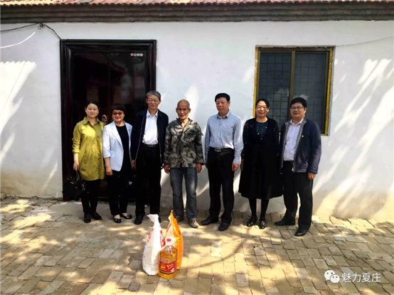
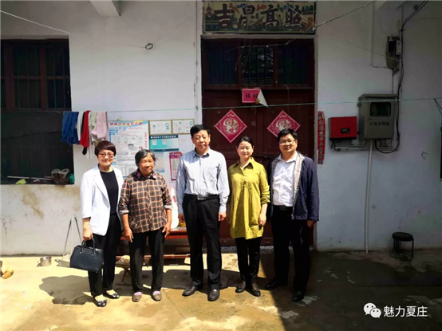
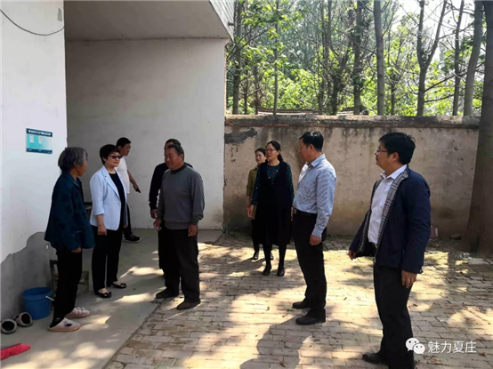

华北水利水电大学副校长刘汉东到我村扶贫调研
- 主页 /
- 新闻中心 /
- 新闻资讯
华北水利水电大学副校长刘汉东到我村扶贫调研
5月9日，华北水利水电大学副校长刘汉东带队来到我村进行调研，了解驻村工作队驻村帮扶工作开展情况。丘集乡党委书记任卫红陪同调研。

首先，刘汉东一行走访慰问了建档立卡贫困户刘子云、刘金殿和陈兴俊，详细询问了他们的身体状况、生活现状及目前的扶贫措施。并嘱咐驻村干部在开展工作时，要明确职责分工，认真落实帮扶措施，详细了解贫困户的生产生活情况，协调解决贫困户生产生活中遇到的困难和问题，确保帮扶措施落到实处。
在田间地头，刘汉东一行详细查看了目前秀梅黄瓜大棚的生产、经营和销售情况。
在街头巷尾，刘汉东一行实地察看了夏庄村人居环境改善、坑塘改造等项目的实施情况，听取了驻村工作队的工作汇报，对夏庄村改善农村人居环境、坑塘改造等工作采取的措施、遇到的难题进行详细了解并提出了指导意见。
在座谈会上，驻村扶贫负责人司保江同志就扶贫村整体情况、精准扶贫工作进展情况、党建工作以及开展的“一红二绿三产业”扶贫规划进行了详细的汇报。刘汉东在听取工作汇报后，对驻村工作队扶贫工作的开展给予了肯定，对乡政府对学校驻村工作的关心支持表示感谢。围绕下一步夏庄村脱贫攻坚工作，刘汉东副校长提出了三点要求：一是要贯彻中央扶贫工作精神，熟练掌握扶贫政策，保证贫困户稳定脱贫，确保不出现返贫现象；二是要引导贫困户克服“等、靠、要”的依赖心理，加强输血造血功能，充分激发困难群众的内生动力和致富愿望，鼓励群众依靠惠民政策和富民产业，自力更生、科学致富。三是要加大产业发展力度，帮助村民就业，树立村民致富信心，以产业发展带动全村经济发展，促使全体村民早日脱贫致富奔小康。会议还进行了华北水利水电大学幸福夏庄帮扶基金捐赠仪式，为夏庄行政村捐赠现金5000元。
华北水利水电大学研究生部、土木与交通学院、地球科学与工程学院等部门负责人参加了此次调研。